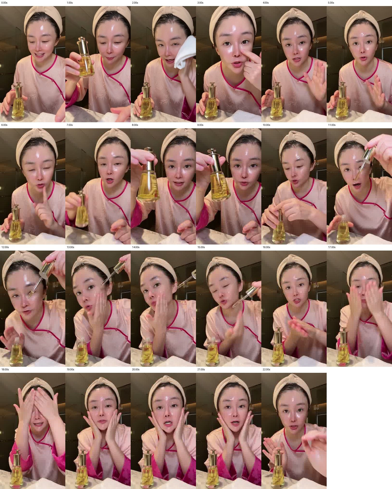
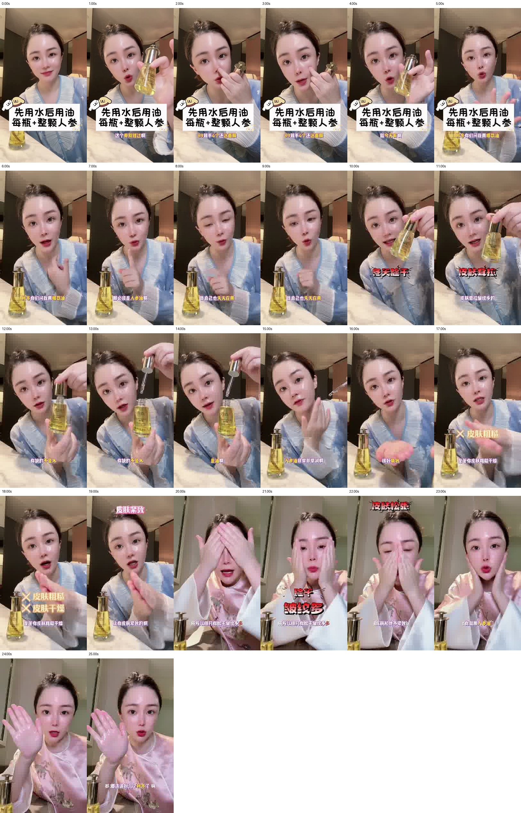

2026-11-09｜3 个文件，2 条独立视频：小爱1 = 小爱3（SHA-256完全相同）。小爱1：22.872秒；小爱2：25.774秒。
新增2条完整脚本参考草稿、11个共用动作（9个限定用途可用、2个取油衔接待核）。按AI参考保存，不进入真人表现库。
优惠/限时 → 秋冬用什么油 → 自用推荐 → 干燥等人群问题 → 用油解释 → 润感/吸收描述 → 使用过程 → 推荐与老粉复购。
优惠提供开头理由，自用叙述接近生活经验，肌肤问题定位人群，滴管和涂抹为抽象肤感配上可见动作，最后回扣需求。该结构可复用，价格、赠品、用法、功效不能直接继承。
| 来源 | 主要路线 | 后续适用 |
|---|---|---|
| 小爱1 / 小爱3 | 毛巾生活感开头 → 指脸 → 空手讲解 → 转瓶 → 开瓶 → 单颊推抹 → 掌心取油意图 → 搓掌 → 全脸 → 亮掌收尾 | 浴后护理场景、同场边讲边用；毛巾和单颊试用可删减。 |
| 小爱2 | 促销举瓶/指脸 → 讲解 → 转瓶 → 瓶口上方提管 → 单颊 → 掌心 → 搓掌 → 覆额匹配剪辑 → 全脸 → 亮掌 | 后期多段拼接参考；约19.75—20秒换装换机位，不能当单镜头连续证据。 |
保留：完整语义、使用因果、产品落桌、双手操作、离手展示。可换序：开场举瓶、局部指示、空手讲解、近镜内容物展示。可省略：毛巾、重复的单颊试用、第二次举瓶。需补齐：油真正落到指腹/面颊/掌心的过程、合理剂量、滴管回瓶后的旋紧或稳定放置。
片中开头已经有强高光，没有可靠的无油起点和稳定光线前后对照；不把“紧致”“不油腻”“很好吸收”作为已证明事实。小爱2的字幕贴纸保留为来源信息，后续导演稿默认不新增这些元素。
| 约时间 | 观察 | 用途与边界 |
|---|---|---|
| 0–1.25秒 | 闭盖瓶从桌面举到镜头前短展示，再放回桌面。 | 开场立即让产品出现；不是使用后效果。 |
| 1.25–2.75秒 | 拿白毛巾接触额头、面部并移向一侧，随后放低。 | 洗护场景动作可选；不能据此宣称已完成清洁或吸干。 |
| 2.75–3.75秒 | 身体前倾，指尖指示鼻侧/面颊局部。 | 近镜局部指示；此时本轮尚未取油，面部已经有明显高光。 |
| 3.75–6.75秒 | 产品放桌面，空手张掌、竖食指，面向镜头讲解。 | 口播停留段仍有轻手势；不必逐词换动作。 |
| 6.75–9.50秒 | 再次举起闭盖瓶并靠近镜头，缓慢变换瓶身角度，瓶内根状物和液体可见。 | 重点是看清内容物，不需要改编成每条必须大幅摇瓶。 |
| 9.5–12.25秒 | 瓶回桌面，扶瓶旋开并提起滴管；滴管靠近镜头/面颊上方。 | 分离与提起可作取用参考；滴落位置与滴数未可靠确认。 |
| 12.25–15.00秒 | 另一手在单侧面颊与下颌往返推抹，持滴管手留在旁侧。 | 脸颊接触路线可观察，油如何转移到脸上需补清，不把悬停写成已滴入。 |
| 15–15.75秒 | 掌心张开接在滴管下，随后滴管回到瓶口，顶盖重新就位。 | 取油到掌心的意图明确，实际液滴与旋紧过程未认证。 |
| 15.75–16.75秒 | 双掌相贴往返搓开。 | 看见的是搓掌，不把温度升高或吸收完成当可见事实。 |
| 16.75–21.25秒 | 双手接触面颊、鼻侧、额头，推抹/按压后回到两颊，稍作侧脸。 | 全脸分区路线；覆盖动作持续跨过多句，效果幅度没有可靠前后对照。 |
| 21.25–22.87秒 | 双手离脸，举起掌心给镜头看，再放低并面向镜头收尾。 | 离手留脸和亮掌属于展示方式，不能证明无残留、不油腻或吸收速度。 |
以下不作为可直接录制台词。存在“到少四个/到时候四个”“蛋白/大反”等识别疑点。小爱2可读字幕写“89到手4个还送面膜”；这是画面字幕证据，未核实活动真实性或声音逐字一致。
| 0.00–2.72秒 | 今天有優惠券 八十九到少四個 還送面膜 |
| 2.72–5.24秒 | 優惠只有今天有 你們問我秋冬用哪款油 |
| 5.24–6.90秒 | 就用人參油 我自己也每天在用 |
| 6.90–9.44秒 | 冬天臉乾的 臉上皮膚鬆弛皺紋多的 |
| 9.44–11.04秒 | 你缺的不是水 你是缺油 |
| 11.36–14.26秒 | 人參油是非常非常潤的油 很潤 但是不油膩 |
| 14.26–17.06秒 | 是管你皮膚粗糙乾燥 是讓你皮膚緊緻的 |
| 17.06–20.00秒 | 所以蛋白你臉乾 皺紋多 皮膚鬆弛不緊緻 |
| 20.00–22.60秒 | 你就用人參油 老粉都臉著好幾個秋冬了 |

| 约时间 | 观察 | 用途与边界 |
|---|---|---|
| 0–1.50秒 | 蓝色服装开场，闭盖瓶从桌面举近镜头，画面有大字贴纸。 | 贴纸和字幕为原片后期层，不成为生成提示词必需元素。 |
| 1.5–3.50秒 | 持瓶靠近脸侧，用指尖指示鼻侧与面颊局部。 | 局部指示可迁移；原片开场已明显有高光。 |
| 3.5–4.50秒 | 再次举瓶并竖指，随后放回桌面。 | 促销强调与产品同框。 |
| 4.5–9.50秒 | 产品留在桌面，张掌、竖指、指向自己等交流动作交替。 | 让完整需求讲解先成立，不用每个关键词都触发产品动作。 |
| 9.5–12.00秒 | 举瓶靠近镜头并变换瓶身角度。 | 产品展示与痛点讲解并行，瓶内根状物可见。 |
| 12–14.25秒 | 另一手承托瓶身，旋开顶盖后将滴管悬在瓶口上方展示。 | 这一条的瓶口和滴管同框更清楚；不推断实际取油体积。 |
| 14.25–15.25秒 | 画面跳到瓶已落桌，一手持滴管靠近面颊，另一手在单侧脸颊推抹。 | 放瓶和上脸衔接未完整呈现；不能当完整连续取油上脸证据。 |
| 15.25–16.50秒 | 摊开掌心，滴管下移指向掌心；随后收回至瓶口并盖回，掌心保持张开。 | 落滴、剂量及旋紧待核；按动作意图保存。 |
| 16.5–19.50秒 | 双掌相贴持续搓开，之后向面部抬起。 | 较长搓掌动作跨越肤感与结果话术，节奏可参考。 |
| 19.5–20.00秒 | 双手覆额，约19.75—20.00秒之间剪接到粉色服装及不同背景/机位。 | 这是匹配动作剪辑，不能登记为同场连续全脸使用或连续效果保持。 |
| 20–23.75秒 | 粉色服装片段继续双手额头、鼻侧、两颊推抹/按压，最后双手离脸。 | 分镜内的操作路线可参考；前后不能当统一肤色对照。 |
| 23.75–25.77秒 | 近镜举起掌心停留，脸与桌面瓶同时可见，完成推荐收尾。 | 长一点的亮掌尾镜供展示节奏参考，不证明吸收。 |
以下不作为可直接录制台词。存在“到少四个/到时候四个”“蛋白/大反”等识别疑点。小爱2可读字幕写“89到手4个还送面膜”；这是画面字幕证据，未核实活动真实性或声音逐字一致。
| 0.00–3.40秒 | 這個圈別錯過 八十九到時候四個還送面膜 |
| 3.40–6.32秒 | 就今天有 秋冬你們問我用哪一款油 |
| 6.32–9.08秒 | 那必須是人參油 我自己也天天在用 |
| 9.08–11.94秒 | 冬天臉乾的 皮膚搭了 皺紋多的 |
| 11.94–13.90秒 | 你缺的不是水 是油啊 |
| 13.90–16.50秒 | 人參油非常非常潤 很好吸收 |
| 16.50–19.18秒 | 是管你皮膚粗糙乾燥 讓你皮膚緊緻的 |
| 19.58–22.54秒 | 所以大反你臉乾 皺紋多 皮膚鬆弛不緊緻 |
| 22.54–25.58秒 | 你就用人參油 老粉都連追好幾個秋冬了 |

| 动作 | 状态 | 价值 |
|---|---|---|
| 闭盖举瓶近镜并落桌 | 限定用途可用 | 让观众快速识别产品。 |
| 毛巾轻触面部建立洗护场景 | 限定用途可用 | 营造日常护理场景；不证明已完成清洁。 |
| 前倾指示鼻侧与面颊局部 | 限定用途可用 | 使讨论部位具体可见；这是用前指示，不是涂后验证。 |
| 产品留桌的张掌竖指讲解 | 限定用途可用 | 给讲解留空间并维持交流感。 |
| 近镜轻转透明瓶展示瓶内根状物 | 限定用途可用 | 展示瓶内内容物；不据此核实人参种类、质量或油液本色。 |
| 扶稳瓶身旋开并提起滴管展示 | 限定用途可用 | 看清取用工具和瓶口；不证明滴数。 |
| 持滴管旁侧的单颊推抹（取油衔接待核） | 待核草稿 | 仅借用单手推抹路线；原片落油链条不足，不当完整滴油上脸示范。 |
| 滴管对准掌心并回瓶（落滴与旋紧待核） | 待核草稿 | 提供取油到双手操作的衔接意图，完整执行需补清。 |
| 双掌相贴往返搓开 | 限定用途可用 | 展示油在掌间分布的动作，不推断温度或吸收。 |
| 双手额头鼻侧两颊分区推抹按压 | 限定用途可用 | 保存分区路线和操作节奏，不证明即时紧致或去皱。 |
| 离手露出面部并近镜亮掌收尾 | 限定用途可用 | 给观众观察空档；亮掌只说明展示了掌面，不能证明不油腻。 |
本库保存两份独立原片；脚本与动作引用同源素材。小爱3仅作为小爱1的文件名别称。库内同大小视频哈希核对未发现重复，转码与重剪同源没有穷尽排查。不改产品规则，不同步GitHub。